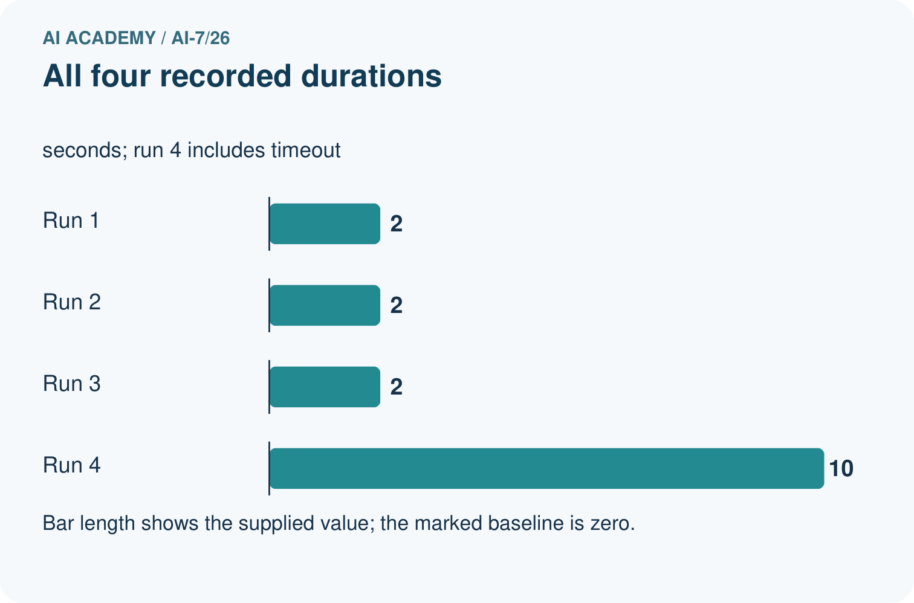
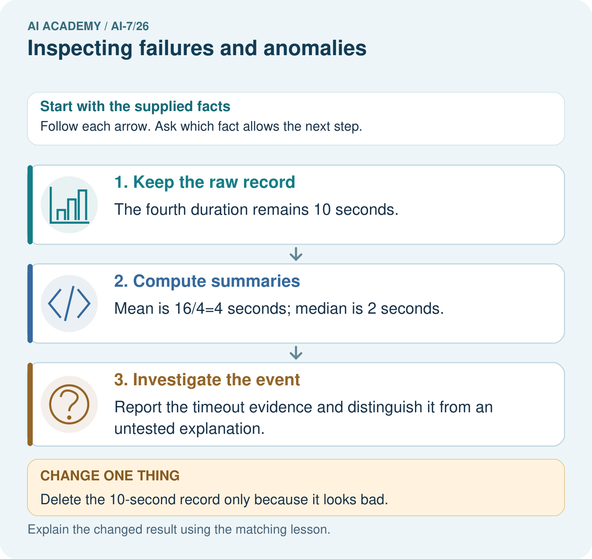
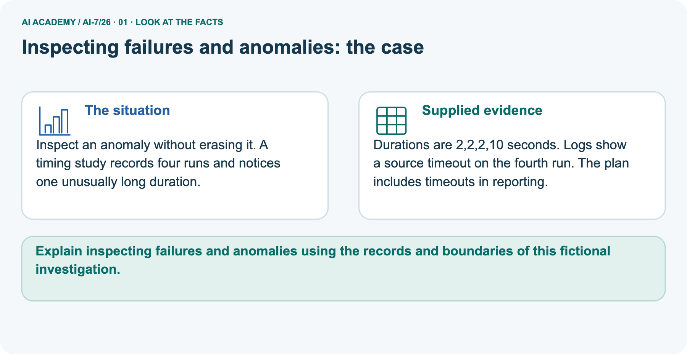
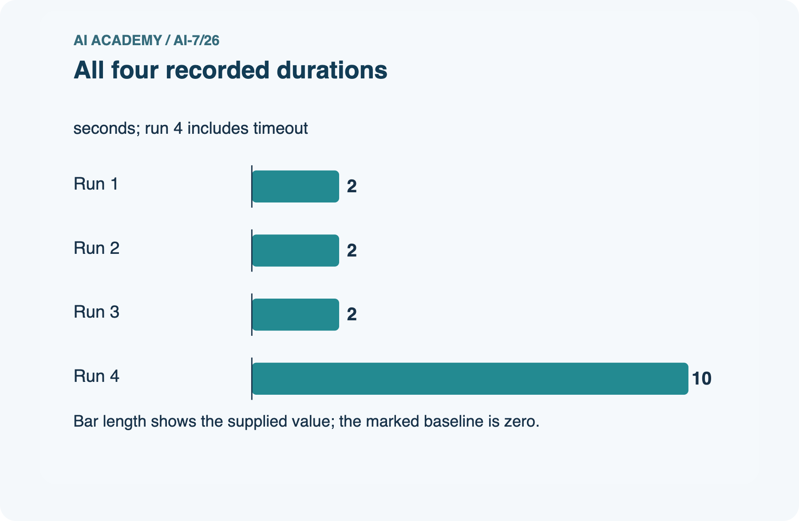
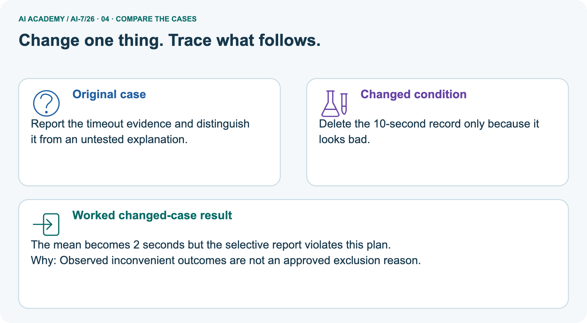
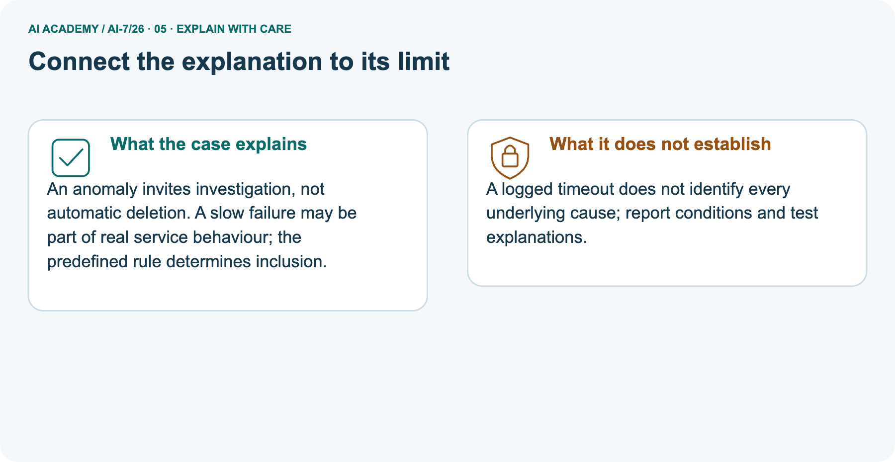
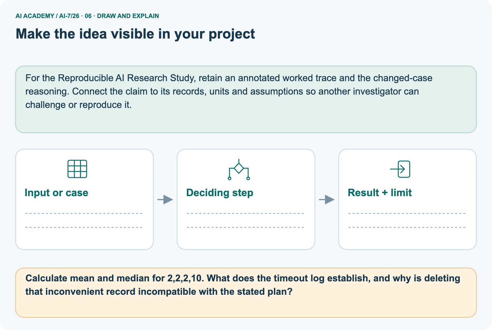

AI Academy · Level 7 · Grade 12 · Week 26 · Workbook
Inspecting failures and anomalies
Learn to understand, design, build, test and explain AI systems responsibly.
Project: Reproducible AI Research Study
THE CONNECTED WEEK
One complete research-case evidence record.
Separate valid slow behavior, demonstrated measurement errors and untested explanations.
Keep one habit: Recall → W1–W3/W5 → independent case → project evidence → feedback and delayed return.
Main lesson · Section 1
Recall · Retrieve before notes
Keep this task’s inputs,rule and response together.
Complete task and evidence
Try the recall before opening notes. Then use a different colour or a labelled second line to correct your explanation.
Without opening the old lesson, explain one key idea from Running the primary experiment. Give an example and a mistake that the idea helps you avoid.
Without opening the old lesson, explain one key idea from Power and resource tradeoffs. Give an example and a mistake that the idea helps you avoid.
Without opening the old lesson, explain one key idea from Privacy and data governance. Give an example and a mistake that the idea helps you avoid.
Running the primary experiment
Power and resource tradeoffs
Privacy and data governance
Main lesson · Section 5
W1 · Explain the current example
Keep this task’s inputs,rule and response together.
Complete task and evidence
Failure inspection generates hypotheses to test, not automatic reasons to erase unusual cases. Main valid durations 1, 2, 2, 15 seconds have sum twenty, mean five and median two. The slow valid case remains in the declared primary analysis. Deleting it without a rule would give mean 5/3 seconds, an illustration of distortion rather than an approved result.
Separate picture durations 2, 2, 2, 10 have mean four and median two. Fourth-run logs show a source timeout and the plan includes timeouts. Removing ten because it looks bad violates that plan. A logged timeout is not a complete root-cause explanation. Inspect raw outputs, input validity, timing boundaries and procedure traces.
Correct demonstrated measurement errors transparently with originals and provenance; retain valid unusual behavior. New post-result investigations are exploratory until tested. No actual timing run, timeout or causal experiment is performed here.
Explain the weekly mechanism in your own words. Use the worked scenario to name its input, decision rule and output.
Main lesson · Section 6
W2 · Trace the worked case
Keep the supplied inputs, comparison rule and evidence together.
Complete task and evidence
Failure inspection generates hypotheses to test, not automatic reasons to erase unusual cases. Main valid durations 1, 2, 2, 15 seconds have sum twenty, mean five and median two. The slow valid case remains in the declared primary analysis. Deleting it without a rule would give mean 5/3 seconds, an illustration of distortion rather than an approved result.
Separate picture durations 2, 2, 2, 10 have mean four and median two. Fourth-run logs show a source timeout and the plan includes timeouts. Removing ten because it looks bad violates that plan. A logged timeout is not a complete root-cause explanation. Inspect raw outputs, input validity, timing boundaries and procedure traces.
Correct demonstrated measurement errors transparently with originals and provenance; retain valid unusual behavior. New post-result investigations are exploratory until tested. No actual timing run, timeout or causal experiment is performed here.
Durations 1, 2, 2, 15 seconds are all valid traces. Team deletes 15 as an outlier without a rule. Show the intermediate steps and give the conclusion with its scope.
| Main calculation | Complete arithmetic | Interpretation |
|---|---|---|
| Retained durations | 1, 2, 2, 15 seconds | All valid under supplied contract |
| Sum / count | 20 seconds / 4 | No undeclared exclusion |
| Mean | 20/4 = 5 seconds | Sensitive to the long valid duration |
| Median | Middle values 2 and 2; average 2 seconds | Different descriptive aspect |
| Wrong-deletion illustration | (1+2+2)/3 = 5/3 seconds | Shows distortion; not a replacement primary result |
| Cause of fifteen-second duration | Not supplied | Propose an investigation without inventing its outcome |
Main lesson · Section 7
W3 · Repair a misconception
Keep this task’s inputs,rule and response together.
Complete task and evidence
Failure inspection generates hypotheses to test, not automatic reasons to erase unusual cases. Main valid durations 1, 2, 2, 15 seconds have sum twenty, mean five and median two. The slow valid case remains in the declared primary analysis. Deleting it without a rule would give mean 5/3 seconds, an illustration of distortion rather than an approved result.
Separate picture durations 2, 2, 2, 10 have mean four and median two. Fourth-run logs show a source timeout and the plan includes timeouts. Removing ten because it looks bad violates that plan. A logged timeout is not a complete root-cause explanation. Inspect raw outputs, input validity, timing boundaries and procedure traces.
Correct demonstrated measurement errors transparently with originals and provenance; retain valid unusual behavior. New post-result investigations are exploratory until tested. No actual timing run, timeout or causal experiment is performed here.
A report omits this qualification: Post-hoc exclusion based on an unwanted outcome can distort the conclusion. Explain how omitting it could change a reader's interpretation, and write an accurate replacement.
Main lesson · Section 9
W5 · Explain the limitation
Keep this task’s inputs,rule and response together.
Complete task and evidence
Failure inspection generates hypotheses to test, not automatic reasons to erase unusual cases. Main valid durations 1, 2, 2, 15 seconds have sum twenty, mean five and median two. The slow valid case remains in the declared primary analysis. Deleting it without a rule would give mean 5/3 seconds, an illustration of distortion rather than an approved result.
Separate picture durations 2, 2, 2, 10 have mean four and median two. Fourth-run logs show a source timeout and the plan includes timeouts. Removing ten because it looks bad violates that plan. A logged timeout is not a complete root-cause explanation. Inspect raw outputs, input validity, timing boundaries and procedure traces.
Correct demonstrated measurement errors transparently with originals and provenance; retain valid unusual behavior. New post-result investigations are exploratory until tested. No actual timing run, timeout or causal experiment is performed here.
For the worked scenario, propose one additional case that could reveal a failure, describe its expected outcome before running it, and explain what would need to remain fixed for a fair comparison.
Do not reuse W4 as a new final test after receiving feedback.
Main lesson · Section 4
Try alone · Selected transfer
Keep this task’s inputs,rule and response together.
Complete task and evidence
Values 2, 3, 4, 20 are valid. Compute mean and median and propose an honest investigation.
Attempt this case before feedback. Record any help. Earlier examples below are further practice; a case already practised with feedback cannot establish fresh transfer.
Independent case: Apply a new case independently
Main lesson · Section 10
Project · Keep the research evidence
Preserve the question, protocol, observations, analysis and limits.
Complete task and evidence
Add a labelled inspecting failures and anomalies evidence sheet to Reproducible AI Research Study. Show how you can explain the mechanism and terminology of inspecting failures and anomalies.
Use the supplied fictional case and keep its inputs, intermediate steps, calculation or prediction, and limitation. Connect this record to last week’s record; a matching answer without a trace is insufficient.
Main lesson · Section 11
Feedback · Repair and return
Keep this task’s inputs,rule and response together.
Complete task and evidence
Revisit this idea with your teacher after a delay. Familiarity is different from explaining and using it on a changed case.
| Evidence | My record |
|---|---|
| Worked alone / hint / model | |
| First step I repaired and why | |
| New case checked later; date and result | |
| What I can now explain without notes | |
| One remaining question |
Reference bank and extra practice
Choose the reference that helps your next step.
Reference · Supported W2 record
Reference · Section 2
Reference · Supported W2 record
Keep this task’s inputs,rule and response together.
Complete task and evidence
Use W2: Trace the worked case for Inspecting failures and anomalies. Record the answer once; the lesson and workbook refer to the same attempt.
| Given inputs | Procedure I chose | Middle steps | Result and check |
|---|---|---|---|
Extra practice · Individual reasoning check
Reference · Section 3
Extra practice · Individual reasoning check
Keep this task’s inputs,rule and response together.
Complete task and evidence
Use the worked case for Inspecting failures and anomalies. Proposed explanation: “The worked result establishes every future case”. Decide whether this explanation is supported.
Point to the step or supplied fact that decides; explain your repair if needed.
Reference · Earlier W4 response copy
Reference · Section 8
Reference · Earlier W4 response copy
Keep this task’s inputs,rule and response together.
Complete task and evidence
Values 2, 3, 4, 20 are valid. Compute mean and median and propose an honest investigation.
Extra practice · Pictured case
Reference · Section 12
Extra practice · Pictured case
Keep this task’s inputs,rule and response together.
Complete task and evidence
Inspect an anomaly without erasing it. A timing study records four runs and notices one unusually long duration.
Durations are 2,2,2,10 seconds. Logs show a source timeout on the fourth run. The plan includes timeouts in reporting.
Calculate mean and median for 2,2,2,10. What does the timeout log establish, and why is deleting that inconvenient record incompatible with the stated plan?
Support used: alone / hint / worked example. This record is practice evidence.
Project connection: For the Reproducible AI Research Study, retain an annotated worked trace and the changed-case reasoning.
Connect the claim to its records, units and assumptions so another investigator can challenge or reproduce it.







Reference · Project milestone
Reference · Section 13
Reference · Project milestone
Keep this task’s inputs,rule and response together.
Complete task and evidence
Project: Reproducible AI Research Study
Current milestone: Prepare the demonstration. Gather reproducible instructions, evidence, access checks and remaining limitations.
For the Reproducible AI Research Study, retain an annotated worked trace and the changed-case reasoning. Connect the claim to its records, units and assumptions so another investigator can challenge or reproduce it.
| Evidence to keep | My record |
|---|---|
| This week’s input and deciding step | |
| Prediction and actual result (or labelled paper trace) | |
| One change since the previous checkpoint and why | |
| One error or limit and the next test |
Extra practice · Predict,check and repair
Reference · Section 14
Extra practice · Predict,check and repair
Keep supported feedback separate from the independent case.
First supported question and optional hint
Inspect an anomaly without erasing it. A timing study records four runs and notices one unusually long duration.
Which labelled step matches this detail? Report the timeout evidence and distinguish it from an untested explanation.
1. Investigate the event
2. Keep the raw record
3. Compute summaries
Hint if needed: Read the steps in the pictorial case. Match the supplied detail to the stage that performs or records it.
Practice 1: explain the deciding evidence
Check after the first attempt
After your attempt, compare with the supported explanation: Investigate the event Report the timeout evidence and distinguish it from an untested explanation. An anomaly invites investigation, not automatic deletion.
A slow failure may be part of real service behaviour; the predefined rule determines inclusion.
Changed-case question and optional hint
Changed-case practice: Delete the 10-second record only because it looks bad. Which conclusion is supported by the supplied facts?
1. This one example guarantees correct results for every future input.
2. The mean becomes 2 seconds but the selective report violates this plan.
3. We can decide the result without examining the changed input or the procedure.
Hint if needed: Use the changed condition and the deciding step in the pictorial trace. The answer must say what follows from those facts.
Practice 2: explain the deciding evidence
Check after the changed attempt
After your attempt, compare with the supported explanation: The mean becomes 2 seconds but the selective report violates this plan. Observed inconvenient outcomes are not an approved exclusion reason.
Repair and retain the record
Review Running the primary experiment (ai-7/25). Goal: Explain the mechanism and terminology of running the primary experiment. Short practice: Compute A’s and B’s six-case counts and identify the cases that favour each.
How must a B revision tuned on case four be labelled when evaluated again on the same set?. Return to this week and explain what you changed.
Review Power and resource tradeoffs (ai-7/23). Goal: Explain the mechanism and terminology of power and resource tradeoffs. Short practice: Calculate both simulated detection fractions and resource costs.
What additional detection is observed for the extra forty units, and does that establish power for an actual classroom study?. Return to this week and explain what you changed.
Review Privacy and data governance (ai-7/20). Goal: Explain the mechanism and terminology of privacy and data governance. Short practice: Point to the analysis table and the restricted identity key.
Why are the codes pseudonymous rather than guaranteed anonymous, and what changes if the key is published?. Return to this week and explain what you changed.
Use Download completed work in the hosted lesson to export your answers, reflections, practice feedback and code-run evidence. Open the HTML copy to read or print it.
Drafts stay in this browser when storage is available; clear drafts on a shared device.
Earlier wording, alternatives and picture transcripts
Use this supported practice once, in the browser or on paper. Keep the reserved independent assessment for a separate first attempt before teacher feedback.
Repair a missing building block
Keep your completed work
Reference · Six-picture response sheets
Reference · Section 15
Reference · Six-picture response sheets
Choose the picture that helps explain the current step.
01. Inspecting failures and anomalies: the case



Inspect an anomaly without erasing it. A timing study records four runs and notices one unusually long duration. Supplied facts: Durations are 2,2,2,10 seconds. Logs show a source timeout on the fourth run.
The plan includes timeouts in reporting.
Point to the given fact that matters most. Explain why it matters.
02. Follow the deciding steps


Keep the raw record: The fourth duration remains 10 seconds. → Compute summaries: Mean is 16/4=4 seconds; median is 2 seconds. → Investigate the event: Report the timeout evidence and distinguish it from an untested explanation.
Point to each numbered stage and explain which recorded input it uses.
03. All four recorded durations



All four recorded durations. Units: seconds; run 4 includes timeout. Run 1: 2. Run 2: 2. Run 3: 2. Run 4: 10.
Read the labels and values. Explain the relationship the model shows.
04. Change one thing. Trace what follows.



Original case: Report the timeout evidence and distinguish it from an untested explanation. Changed condition: Delete the 10-second record only because it looks bad.
Expected result: The mean becomes 2 seconds but the selective report violates this plan. Reason: Observed inconvenient outcomes are not an approved exclusion reason.
Predict before checking the worked changed-case result. Name what changed and what the supplied facts allow you to conclude.
05. Connect the explanation to its limit



An anomaly invites investigation, not automatic deletion. A slow failure may be part of real service behaviour; the predefined rule determines inclusion.
Limit: A logged timeout does not identify every underlying cause; report conditions and test explanations.
Explain the case, then point to a limit on the claim.
06. Make the idea visible in your project



For the Reproducible AI Research Study, retain an annotated worked trace and the changed-case reasoning. Connect the claim to its records, units and assumptions so another investigator can challenge or reproduce it.
Draw your input, deciding step, result and limit. Supported question: Calculate mean and median for 2,2,2,10. What does the timeout log establish, and why is deleting that inconvenient record incompatible with the stated plan?
Draw your project trace and justify the deciding step using evidence.